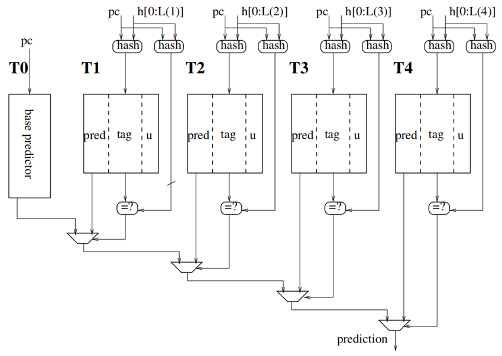

TAGE-SC 分支预测器
Categories:
功能介绍
TAGE-SC 是南湖架构条件分支的主预测器，属于精确预测器（Accurate Predictor，简称 APD）。TAGE-SC 可以看作两个功能相对独立的组件：预测部分 TAGE 和 校验部分 SC。
- 标记几何历史长度预测器 TAGE （Tagged Geometric History Length Predictor）利用历史长度不同的多个预测表，可以挖掘极长的分支历史信息。TAGE功能是预测一个跳转指令是跳转（Taken），还是不跳转（不Taken）， 它由一个基预测表和多个历史表组成，首先通过多个历史表进行分支预测，如果没有预测结果，则再采用基础预测表的预测结果。
- SC (Statistical Corrector) 是统计校正器。当 SC 会参考 TAGE 的预测结果和统计偏向的结果。并根据这两个结果，矫正最终的预测结果。
在昆明湖中，由于每个预测块，最多可以有2条跳转指令，因此TAGE在每次预测最多同时预测 2 条条件分支指令。在访问 TAGE 的各个历史表时，用预测块的起始地址作为 PC，同时取出两个预测结果，并基于相同的全局历史进行预测。
昆明湖Tage分支预测器
基本功能

TAGE预测器的核心思路是提供不同历史长度的预测结果，并选择最合适的结果进行反馈。在TAGE预测器中，一共有 1+N 个表历史记录表，N 为可配置选项。以昆明湖为例，N=4。
基于 T0 表的预测器为基础预测器。在预测时，直接通过预测块的 PC 地址在 T0 表中查找到该地址对应的 “2 bit 饱和计数器表示的跳转历史信息” ，然后根据历史信息做出预测结果。T0表的表项只有2bit，所以能记录的历史状态有限。
对于 T0 以外的表，我们用 Tn 进行表示。在查表时除了 PC 外，还需要用到全局跳转历史信息H进行查找。查找命中后，根据 “3bit饱和预测器” 进行跳转或者不跳转的预测。Tn 表的n越大，其用到的H中的位数越多。
对于每一次预测，TAGE 从所有 Tn 命中表项中选择全局跳转历史最长的表项。
- 如果该表项存在，且预测结果置信度高就用该项作为最终预测结果。
- 如果置信度低，就通过另外一个内部计数器来判断选择该项还是 T0 作为最后预测。
在实现上，为了节约空间，检索 Tn 表时，输入的跳转历史信息H需要进行压缩，该过程也称为历史折叠。
各预测表的表项包含如下元素：
- T0 表项通过 pc 直接索引
- 2 bit pred 无符号饱和计数器（给出预测方向和信心强度）
- Tn 表项通过 异或 pc 与 折叠全局历史 索引
- 1 bit valid 有效位
- 3 bit pred 无符号饱和计数器
- 8 bit tag （基于Hash校验是否命中，而非巧合）
- 1 bit useful 用于控制有效期
对于一个预测块，有可能所有的表都会产生预测结果，此时就需要进行选择。如上图所示，一般情况下，Tn表的编号越大，优先级越高。
流水线
TAGE 内含两个流水级，第一级计算索引，第二级通过索引读出SRAM表中的结果
- 第0拍，s0：第一个流水级的输入，一般是pc和折叠历史。
第一流水级运行：计算index。通过寄存器输出到s1
- 第1拍，s1：第二个流水级的输入，为第一级阶段计算好的index等数据。
第二流水级运行：访存SRAM，读取预测结果。通过寄存器输出到s2
- 第2拍，s2：实际预测结果。TAGE用了2拍进行预测，在2拍之后的第3拍预测结果就绪可用。
数据结构
-
在昆明湖的实现中，T0与Tn的表结构如下所示：
-
预测器 作用 表项构成 项数 基准预测器T0 用于在其他预测器的预测结果都无效时输出预测结果 2 bit ctr 饱和计数器最高位决定跳转方向 2路各2048项，每路对于一条分支指令 预测表T1-T4 对每个预测块的输入，所有Tn表都进行预测，在所有预测有效的结果中，选择历史记录最长的结果作为最后预测结果。历史记录长度由输入的H决定 1 bit valid 有效位 3 bit ctr 饱和计数器8 bit tag 校验命中1 bit us 作为usefulness计数器 4096项、奇数项对应第一条分支指令，偶数项对应第二条分支指令
-
对于每个表Tn，在查询时，其输入“全局分支历史数据H”的长度是不同的。假如总的预测历史长度为S，Tn、Tn+1可能用S的低x，低y位 （越低的位是越新的历史）作为查询输入。一般情况下，Tn表的n越大，其用到的历史信息越长，即 x<y 。
在进行 Tn 表的查询时，由于历史数据H进行了“压缩”，可能导致一个PC1^H1的结果与另一个PC2^H2的结果相同（类似Hash表的Hash冲突），进而导致索引到无效数据（预测PC1索引到预测PC2的数据）。所以TAGE为每个表提供了一个tag标识，昆明湖中采用了8bit tag，来减小冲突发生的概率，tag的计算方法和查询的索引方法不同，只有当tag计算相同时查询结果才有效。
在Tn表项中，除了饱和计数器ctr和tag外，还有1bit的usefulness计数器，该计数器为0时，作弱表项，表示可以当作该项可以被重新分配当作他用；不为0时，作强表项，该项不能被分配当作他用。
为了尽力避免所有表项全为1，无法分配新表项的情况发生，TAGE预期使用计数器bankTickCtrs 对所有usefulness进行清零操作。
T0，Tn表的检索方法
- 对于T0表，在查找时用 PC[11:1] 位进行索引2048表项，因此对于T0来说，不可能存在检索不到的情况。
- 对于表Tn，除了 PC[11:1] 外，还需要基于全局分支历史进行检索。在昆明湖中，顶层分支预测器维护了一个256bit的全局历史记录GH，可以根据子预测器需要将GH的最近n位历史信息，按目标位数x进行折叠。 即把n，以长度x为基本单元，拆分成ceil(x/n)个长为x的数，然后按位进行异或得到。通常用FH（Folded History）表示，具体流程请参考 分支折叠历史章节。TAGE预测器查找Tn的表项时，用到了index和tag，他们的计算公式如下表所示：
| 计算方法 公式 |
|---|
| index = FH ^ ((pc»1)低位) |
| tag = FH1 ^ FH2 ^ ((pc»1)低位) |
其中FH、FH1、FH2表示按一定规范折叠后的全局分支历史。对于Tn而言，其FH、FH1、FH2都有各自的对于折叠位数，不一定相同。在昆明湖实现中，T0和Tn表的配置如下：
| 表名称 | FH长度 | FH1长度 | FH2长度 | 最近历史长度（用到GH中的位数） |
|---|---|---|---|---|
| T1 | 8比特 | 8比特 | 7比特 | 低8位，即把最新8位历史，折叠成FH、FH1、FH2 |
| T2 | 11比特 | 8比特 | 7比特 | 低13位，即把最新13位历史，折叠成FH、FH1、FH2 |
| T3 | 11比特 | 8比特 | 7比特 | 低32位，即把最新32位历史，折叠成FH、FH1、FH2 |
| T4 | 11比特 | 8比特 | 7比特 | 低119位，即把最新119位历史，折叠成FH、FH1、FH2 |
注：pc»1是因为使用了RISC-C拓展，2Byte对齐，而PC本身已经省略了1B对齐，所以只用1b
替代预测器
由于 Tn 表使用饱和计数器进行预测，因此其输出结果可能存在“信心不足”的情况。例如在昆明湖中，对3比特饱和计数器，100、011时都是弱预测。为了为该状态提供更多的选择参考，TAGE 预测器还提供了一个“替代预测器”机制，他的作用是告诉 TAGE 在 Tn 表预测的结果 “信心不足” 时，是该选择 Tn 的预测结果，还是选择 T0 的预测结果。
在昆明湖的具体实现中，“替代预测器” 基于 useAltOnNaCtrs 的寄存器组实现。它由两路128个 4-bit饱和计数器 构成，每个计数器都被初始化为 0b1000。在TAGE进行预测时，使用 PC(7,1) 进行索引得到对应的饱和计数器。如果该计数器的值大于等于预设值，且Tn预测结果信心不高，则选择T0的结果，否则选择Tn的结果。
预测过程
综上所述，昆明湖中TAGE预测器的预测步骤如下：
- 并行索引 T0 表以及 Tn 表，根据命中结果选择使用哪一个表给出预测结果
- 如果有命中到tag匹配的Tn表，由历史记录最长Tn表的ctr饱和计数器给出潜在预测结果。
- 如果没有命中Tn表，则由T0表的饱和计数器给出最终预测结果。
- 如果匹配到的Tn表的潜在预测结果为弱预测(100,011)，且替代预测中PC对应4-bit计数器的值大于等于阈值，则采用T0表的结果为最终结果，否则采用Tn表的预测结果为最终预测结果。
训练过程
由于TAGE的预测过程用到了很多计数器和tag，他们需要根据一定的规则进行更新，该过程称为训练。该训练过程发生在BPU的update阶段，该阶段会输入PC，分支历史、以及否预测正确等信息。香山昆明湖的分支预测进行训练的流程根据不同情况，分为如下几个步骤：
- T0作为最终使用的预测结果时更新：发生跳转（即taken）则 pc 索引的 ctr 饱和计数器 +1，否则 -1
- 在只有T0命中时，进行如下操作
- T0预测正确则不额外更新
- T0预测错误则尝试随机在Tn中的某个表申请一个新表项 申请新表项时需要对应index位置的原表项useful为0 新表项默认是弱预测，useful为0，并设置其tag为计算出来的新tag
- 在T0和Tn同时命中时，进行如下操作
- Tn 始终更新：taken 则 pc 索引的 ctr 饱和计数器 +1，否则 -1 需要注意，”命中“ 表示 index 索引到的表项的 tag 要和计算出的 tag 匹配
- 若T0和Tn结果相同
- 预测正确则不额外更新
- 预测错误则尝试在比Tn对应历史更长的表中随机申请一个新表项 申请新表项时需要对应index位置的原表项useful为0 新表项默认是弱预测，useful为0，tag设置为用新历史信息计算出来的tag
- 若T0和Tn结果不同
- 若Tn正确则表项 useful +1
- 若结果还同时为弱预测，则选用T0的替代预测计数器 -1
- 若Tn错误则表项 useful -1，同时如 3.2.2 在更长历史表中申请新表项
- 若结果还同时为弱预测，则选用T0的替代预测计数器 +1
- 若Tn正确则表项 useful +1
- 在每次需要分配表时，进行动态重置usefulness标志位
- 使用 7bit 的 bankTickCtrs 寄存器，并计算
- 可分配的表数 a（历史长度比当前更长，且对应索引的useful为 0 ）
- 不可分配的表数 b（历史长度比当前更长，且对应索引的useful 不为 0 ）
- 更新 bankTickCtrs += Δ（饱和计数）， Δ = b - a，
- 当 bankTickCtrs当为最大值时, 重置所有useful=0
- 使用 7bit 的 bankTickCtrs 寄存器，并计算
昆明湖SC分支预测器
基本功能介绍
SC（Statistics counter）分支预测器是一种基于历史统计信息的分支预测器。
与TAGE类似，在SC中通常有多个表Tn，他们对应了不同历史长度的跳转统计。不同点在于，在预测按PC检索时，每个表Tn都会命中，然后SC把每个命中的表项进行求和，计算总的“饱和计数器”跳转信息，最后根据总的跳转信息判断是否跳转。一般情况下，SC采用“有符号饱和计数器”，计数器值大于0时表示跳转，小于0时表示不跳转。计数器的绝对值越大，表示其预测置信度越高。
在SC预测器中，SC也由多个表组成（例如T1，T2，T3，T4），但相对TAGE预测器少了基础预测表T0。SC中Tn表有6 bit的有符号饱和计数器。SC表的索引方式如下：
| 计算方式 |
|---|
| Index = (FH) ^ ((pc»1)低位) |
对应每个表，其表项数和用到的折叠历史长度如下：
| 表名 | 表项数 | FH长度 | 折叠历史范围 |
|---|---|---|---|
| T1 | 512 | 0 | 不折叠 |
| T2 | 512 | 4 | 把历史信息的低4位，折叠成FH |
| T3 | 512 | 8 | 把历史信息的低10位，折叠成FH |
| T4 | 512 | 8 | 把历史信息的低16位，折叠成FH |
在计算统计预测结果时，总得统计结果计算公式如下：
其中ctr_sc表示每个表的有符号饱和计数器。对其进行左移加一是进行权重调整。累加后的scCtrSum就是SC的最终预测结果，如果为该值大于零，则预测跳转，小于零则预测不跳转。其绝对值越大，表示预测置信度越高。
典型数据转换结果如下（在计算时为了不溢出，扩展到了9位）：
- 均为 6b100000（强不跳转） ，求得 9b100000100，值为 -252
- 均为 6b011111（强跳转），求得 9b011111100，值为 252
- 均为 6b000000（弱跳转），求得 9b000000100，值为 4
- 均为 6b111111（弱不跳转），求得 9b111111100，值为 -4
预测过程
- 通过PC和历史信息结算表Tn的索引 Index
- 根据Index查询，得到所有表对应的饱和计数器
- 所有所有表查询到的饱和计数器进行求和得到最终预测结果（大于0跳转，小于0不跳转）
训练过程
在update阶段进行饱和计数器的更新。
- 如果PC对应的真实指令跳转，这所有表中对应的饱和计数器+1
- 如果PC对应的真实指令不跳转，这所有表中对应的饱和计数器-1
昆明湖TAGE-SC分支预测器
有了TAGE为何还需要SC
一些应用上，一些分支行为与分支历史或路径相关性较弱，表现出一个统计上的预测偏向性。对于这些分支，相比基于历史的分支预测，使用计数器捕捉统计偏向的方法更为有效。
TAGE在预测与历史非常相关的分支时非常有效，但对有统计偏向的分支则支持不佳。例如只对一个方向有小偏差，但与历史路径没有强相关性的分支。为了避免该问题，可以在传统TAGE预测器上增加SC预测器。
TAGE-SC功能介绍
在昆明湖 TAGE-SC 预测器中，会同时得到 TAGE 和 SC 的预测结果 P1 和 P2，然后对他们的结果进行累加 P = P1+P2 ，如果 P 的绝对值大于 8bit 的阈值 sc_bank_thres，则采用预测器结果 P，否则则采用 P1 作为最终预测结果。
为了进行动态自适应，阈值sc_thres是需要是动态变化的。为此在实现上TAGE-SC使用了一个5bit的sc_bank_ctr计数器对阈值sc_bank_thres进行调整。另外，由于昆明湖支持同时预测2条分支指令，因此阈值寄存器和对应的控制计数器也是两份。
流水线
TAGE-SC 内含 3 个流水级，TAGE的2级流水已经介绍过，SC部分的流水线如下：
- 第0拍，s0 读入 pc 和折叠历史
第一流水级：通过pc和FH计算出index，并输出到s0_idx寄存器
- 第1拍，s1 从s0寄存器读出s0_idx作为s1_idx
第二流水级：找到SCTable中s1_idx对应的计数器数据，输出到s1_scResps寄存器
- 第2拍，s2 从s1寄存器读出s1_scResps作为s2_scResps
第三流水级：根据s2_scResps选择是否需要反转预测结果，输出到s2_disagree寄存器
- 第3拍，s3 从s2_disagree中读出结果，作为s3_disagree输出
预测过程
在TAGE-SC预测时，TAGE的预测结果P1用tage_ctr表示，SC的预测结果P2用scCtrSum表示。在预测时，分为如下四步。
-
执行SC预测器，得到预测结果scCtrSum
-
并行得到TAGE预测器的预测结果 tage_ctr。
-
由于TAGE的预测结果是无符号饱和计数器，而SC的预测结果是有符号饱和计数器，如果对他们进行相加，需要进行数据转换。
-
昆明湖在实现上，采用了对TAGE的结果进行转换。转换后的结果用 tageCtrCentered 表示，具体转换过程如下：
$$tageCtrCentered=((((ctr_{tage} -4)<<1)+1)<<3) $$-
3比特的无符号饱和计数器转换为8比特的有符号饱和计数器结果举例如下所示：
-
3b100 弱跳转 => 8b00001000 = 8
-
3b011 弱不跳转 => 8b11111000 = -8
-
3b111 强跳转 => 8b00111000 = 56
-
3b000 强不跳转 => 8b11001000 = -56
-
-
-
对TAGE和SC的预测结果进行相加得到最终预测结果P，在实现上用totalSum进行表示。
-
根据 totalSum 以及 sc_bank_thres 决定最终预测方向
- totalSum > 0 且绝对值超过阈值则跳转： 如果 scCtrSum > sc_bank_thres - tageCtrCentered 也可以理解成 totalSum > sc_bank_thres 上面的写法可以降低最大位宽（把保证不溢出需要10bit变成9bit）
- totalSum < 0 且绝对值超过阈值则不跳转： 如果 scCtrSum < -sc_bank_thres - tageCtrCentered 也可以理解成 |totalSum| > sc_bank_thres
训练过程
在对 TAGE 和 SC 进行组合后，TAGE-SC 添加了 sc_bank_ctr 计数器用来控制阈值sc_bank_thres。因此在训练时，除了 TAGE 和 SC 本身的训练外，还需要对新增加的计数器进行更新。
在update阶段，其具体更新流程如下：
- TAGE-SC采用了预测结果P（即TAGE+SC后的预测结果），如果 |totalSum| 在 [sc_bank_thres -4, sc_bank_thres -2] 的范围内，则对阈值相关寄存器组进行更新
- 更新 sc_bank_ctr，饱和计数 若预测正确，则 sc_bank_ctr +=1 若预测错误，则 sc_bank_ctr -=1
- 更新 sc_bank_thres ，受限制的饱和运算， 若 sc_bank_ctr 更新后的值已达 0b11111 且 sc_bank_thres <= 31，则 sc_bank_thres +=2 若 sc_bank_ctr 更新后的值为 0 且 sc_bank_thres >=6，则 sc_bank_thres -=2 其余情况thres不变。
- sc_bank_thres 更新判断结束后，会对 sc_bank_ctr 再做一次判断 若更新后的sc_bank_ctr若为0b11111或0，则thres_ctr会被置回初始值0b10000。
- TAGE-SC采用了预测结果P1（即TAGE的预测结果）不进行任何操作
接口列表
TageSC
| 信号类型 | 信号宽度 | 信号名 | 信号描述 |
|---|---|---|---|
| input | * | clock | |
| input | * | reset | |
| input | *[35:0] | io_reset_vector | 用于reset时，reset s1_pc_dup_0 提供的值 |
| input | *[40:0] | io_in_bits_s0_pc_0 | 复制的s0_pc的dup数组的第1个，给顶层BPU的PC |
| input | *[40:0] | io_in_bits_s0_pc_1 | 复制的s0_pc第2个，给Tage的PC |
| input | *[40:0] | io_in_bits_s0_pc_3 | 复制的s0_pc的第4个，给SC的PC |
| input | *[10:0] | io_in_bits_folded_hist_1_hist_17_folded_hist | TageTable 2 用到的11bits 折叠历史 从多长历史范围折叠到11bit见前文所述的表 注意TageTable下标+1，此处 T2 是前文 T3 |
| input | *[10:0] | io_in_bits_folded_hist_1_hist_16_folded_hist | TageTable 3 用到的11bits 折叠历史 |
| input | *[6:0] | io_in_bits_folded_hist_1_hist_15_folded_hist | TageTable 1 用到的7bits 折叠历史 |
| input | *[7:0] | io_in_bits_folded_hist_1_hist_14_folded_hist | TageTable 0 用到的8bits 折叠历史 |
| input | *[6:0] | io_in_bits_folded_hist_1_hist_9_folded_hist | TageTable 2 用到的7bits 折叠历史 |
| input | *[7:0] | io_in_bits_folded_hist_1_hist_8_folded_hist | TageTable 3 用到的8bits 折叠历史 |
| input | *[6:0] | io_in_bits_folded_hist_1_hist_7_folded_hist | TageTable 0 用到的7bits 折叠历史 |
| input | *[6:0] | io_in_bits_folded_hist_1_hist_5_folded_hist | TageTable 3 用到的7bits 折叠历史 |
| input | *[7:0] | io_in_bits_folded_hist_1_hist_4_folded_hist | TageTable 1 用到的8bits 折叠历史 |
| input | *[7:0] | io_in_bits_folded_hist_1_hist_3_folded_hist | TageTable 2 用到的8bits 折叠历史 |
| input | *[10:0] | io_in_bits_folded_hist_1_hist_1_folded_hist | TageTable 1 用到的11bits 折叠历史 |
| input | *[3:0] | io_in_bits_folded_hist_3_hist_12_folded_hist | SCTable 1 用到的 4bit 折叠历史 |
| input | *[7:0] | io_in_bits_folded_hist_3_hist_11_folded_hist | SCTable 2 用到的 8bit 折叠历史 |
| input | *[7:0] | io_in_bits_folded_hist_3_hist_2_folded_hist | SCTable 3 用到的 8bit 折叠历史 |
| output | * | io_out_s2_full_pred_0_br_taken_mask_0 | io_out_s2_full_pred_{i}br_taken_mask{j} Tage 在 s2流水级输出的，复制4份 预测块中第 j 条分支指令TAGE预测结果 这里不该叫mask吧 |
| output | * | io_out_s2_full_pred_0_br_taken_mask_1 | |
| output | * | io_out_s2_full_pred_1_br_taken_mask_0 | |
| output | * | io_out_s2_full_pred_1_br_taken_mask_1 | |
| output | * | io_out_s2_full_pred_2_br_taken_mask_0 | |
| output | * | io_out_s2_full_pred_2_br_taken_mask_1 | |
| output | * | io_out_s2_full_pred_3_br_taken_mask_0 | |
| output | * | io_out_s2_full_pred_3_br_taken_mask_1 | |
| output | * | io_out_s3_full_pred_0_br_taken_mask_0 | io_out_s3_full_pred_{i}br_taken_mask{j} Tage 在 s3流水级输出的，复制4份 预测块中第 j 条分支指令SC预测结果 |
| output | * | io_out_s3_full_pred_0_br_taken_mask_1 | |
| output | * | io_out_s3_full_pred_1_br_taken_mask_0 | |
| output | * | io_out_s3_full_pred_1_br_taken_mask_1 | |
| output | * | io_out_s3_full_pred_2_br_taken_mask_0 | |
| output | * | io_out_s3_full_pred_2_br_taken_mask_1 | |
| output | * | io_out_s3_full_pred_3_br_taken_mask_0 | |
| output | * | io_out_s3_full_pred_3_br_taken_mask_1 | |
| output | *[222:0] | io_out_last_stage_meta | 见附表 |
| input | * | io_ctrl_tage_enable | |
| input | * | io_ctrl_sc_enable | |
| input | * | io_s0_fire_0 | s0 阶段流水线控制 相同信号复制多份，0给BPU，1给Tage，3给SC |
| input | * | io_s0_fire_1 | |
| input | * | io_s0_fire_3 | |
| input | * | io_s1_fire_0 | s1 阶段流水线控制 |
| input | * | io_s1_fire_1 | |
| input | * | io_s1_fire_2 | |
| input | * | io_s1_fire_3 | |
| input | * | io_s2_fire_0 | s2 阶段流水线控制 |
| input | * | io_s2_fire_1 | |
| input | * | io_s2_fire_2 | |
| input | * | io_s2_fire_3 | |
| output | * | io_s1_ready | tage的所有表，可以执行读取结果的操作 |
| input | * | io_update_valid | 从FTQ发向BPU的后端执行结果（更新信号）是否有效 |
| input | *[40:0] | io_update_bits_pc | （后端执行过的）预测块的PC |
| input | *[10:0] | io_update_bits_spec_info_folded_hist_hist_17_folded_hist | TageTable 2 用到的11bits 折叠历史 预测时使用的分支历史结果，没有更新，转了一圈回来了 |
| input | *[10:0] | io_update_bits_spec_info_folded_hist_hist_16_folded_hist | TageTable 3 用到的11bits 折叠历史 |
| input | *[6:0] | io_update_bits_spec_info_folded_hist_hist_15_folded_hist | TageTable 1 用到的7bits 折叠历史 |
| input | *[7:0] | io_update_bits_spec_info_folded_hist_hist_14_folded_hist | TageTable 0 用到的8bits 折叠历史 |
| input | *[3:0] | io_update_bits_spec_info_folded_hist_hist_12_folded_hist | SCTable 1 用到的 4bit 折叠历史 |
| input | *[7:0] | io_update_bits_spec_info_folded_hist_hist_11_folded_hist | SCTable 2 用到的 8bit 折叠历史 |
| input | *[6:0] | io_update_bits_spec_info_folded_hist_hist_9_folded_hist | TageTable 2 用到的7bits 折叠历史 |
| input | *[7:0] | io_update_bits_spec_info_folded_hist_hist_8_folded_hist | TageTable 3 用到的8bits 折叠历史 |
| input | *[6:0] | io_update_bits_spec_info_folded_hist_hist_7_folded_hist | TageTable 0 用到的7bits 折叠历史 |
| input | *[6:0] | io_update_bits_spec_info_folded_hist_hist_5_folded_hist | TageTable 3 用到的7bits 折叠历史 |
| input | *[7:0] | io_update_bits_spec_info_folded_hist_hist_4_folded_hist | TageTable 1 用到的8bits 折叠历史 |
| input | *[7:0] | io_update_bits_spec_info_folded_hist_hist_3_folded_hist | TageTable 2 用到的8bits 折叠历史 |
| input | *[7:0] | io_update_bits_spec_info_folded_hist_hist_2_folded_hist | SCTable 3 用到的 8bit 折叠历史 |
| input | *[10:0] | io_update_bits_spec_info_folded_hist_hist_1_folded_hist | TageTable 1 用到的11bits 折叠历史 |
| input | * | io_update_bits_ftb_entry_brSlots_0_valid | FTB 表项的第一个slot是否有效（存储了跳转指令） |
| input | * | io_update_bits_ftb_entry_tailSlot_sharing | FTB 表项的最后一个slot是否存储了条件分支而非无条件跳转 |
| input | * | io_update_bits_ftb_entry_tailSlot_valid | FTB 表项的最后一个slot是否有效 |
| input | * | io_update_bits_ftb_entry_always_taken_0 | 历史上slot 0 指令总是跳转 |
| input | * | io_update_bits_ftb_entry_always_taken_1 | 历史上slot 1 指令总是跳转 |
| input | * | io_update_bits_br_taken_mask_0 | solt 0 是否 taken |
| input | * | io_update_bits_br_taken_mask_1 | solt 1 是否 taken |
| input | * | io_update_bits_mispred_mask_0 | solt 0 是否预测正确 |
| input | * | io_update_bits_mispred_mask_1 | solt 1 是否预测正确 |
| input | *[222:0] | io_update_bits_meta | 见附表 |
io_out_last_stage_meta
需要设计参与优化！
| 信号类型 | 信号位 | 信号名 | 信号描述 |
|---|---|---|---|
| output | [218:88] | 0 | 占位，全为0，传递到composer时会忽略 |
| 87 | resp_meta_providers_1_valid_r | ||
| [86:85] | resp_meta_providers_1_bits_r | ||
| 84 | resp_meta_providers_0_valid_r | ||
| [83:82] | resp_meta_providers_0_bits_r | ||
| [81:79] | resp_meta_providerResps_1_r_ctr | ||
| 78 | resp_meta_providerResps_1_r_u | ||
| 77 | resp_meta_providerResps_1_r_unconf | ||
| [76:74] | resp_meta_providerResps_0_r_ctr | ||
| 73 | resp_meta_providerResps_0_r_u | ||
| 72 | resp_meta_providerResps_0_r_unconf | ||
| 71 | resp_meta_altUsed_1_r | ||
| 70 | resp_meta_altUsed_0_r | ||
| 69 | resp_meta_altDiffers_1_r | ||
| 68 | resp_meta_altDiffers_0_r | ||
| [67:66] | resp_meta_basecnts_1_r | ||
| [65:64] | resp_meta_basecnts_0_r | ||
| [63:60] | resp_meta_allocates_1_r | ||
| [59:56] | resp_meta_allocates_0_r | ||
| 55 | resp_meta_takens_1_r | ||
| 54 | resp_meta_takens_0_r | ||
| 53 | resp_meta_scMeta_tageTakens_1_r | ||
| 52 | resp_meta_scMeta_tageTakens_0_r | ||
| 51 | resp_meta_scMeta_scUsed_1_r | ||
| 50 | resp_meta_scMeta_scUsed_0_r | ||
| 49 | resp_meta_scMeta_scPreds_1_r | ||
| 48 | resp_meta_scMeta_scPreds_0_r | ||
| [47:42] | r_1_3 | scMeta(预测时的状态)中第2路的第4个sc_ctr的值 | |
| [41:36] | r_1_2 | scMeta中第2路的第3个sc_ctr的值 | |
| [35:30] | r_1_1 | scMeta中第2路的第2个sc_ctr的值 | |
| [29:24] | r_1_0 | scMeta中第2路的第1个sc_ctr的值 | |
| [23:18] | r_3 | scMeta中第1路的第4个sc_ctr的值 | |
| [17:12] | r_2 | scMeta中第1路的第3个sc_ctr的值 | |
| [11:6] | r_1 | scMeta中第1路的第2个sc_ctr的值 | |
| [5:0] | r_0 | scMeta中第1路的第1个sc_ctr的值 |
io_update_bits_meta
| 信号类型 | 信号位 | 信号名 | 信号描述 |
|---|---|---|---|
| input | [218:94] | FTB, ITAGE, RAS 模块传给 FTQ 的 META 信息，忽略 | |
| [93:6] | io_out_last_stage_meta[87:0] 偏移 6bit 后的结果 | TAGE 输出给 FTQ 的 META | |
| [5:0] | uFTB 输出给 FTQ 的 META |